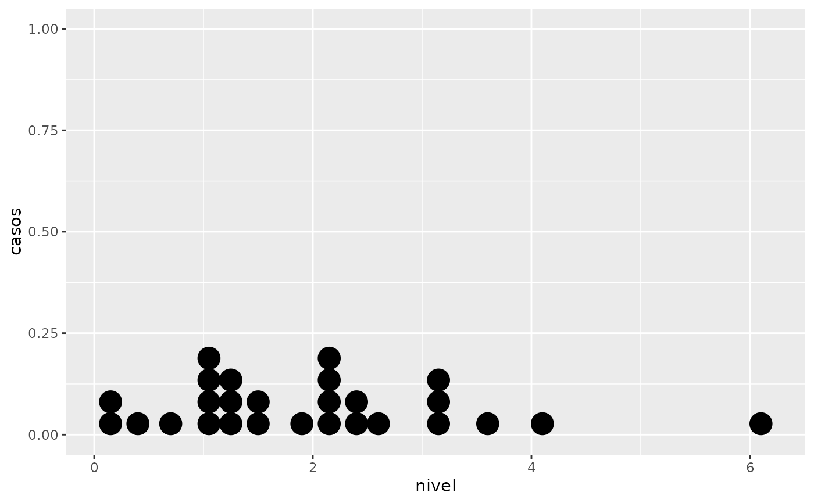
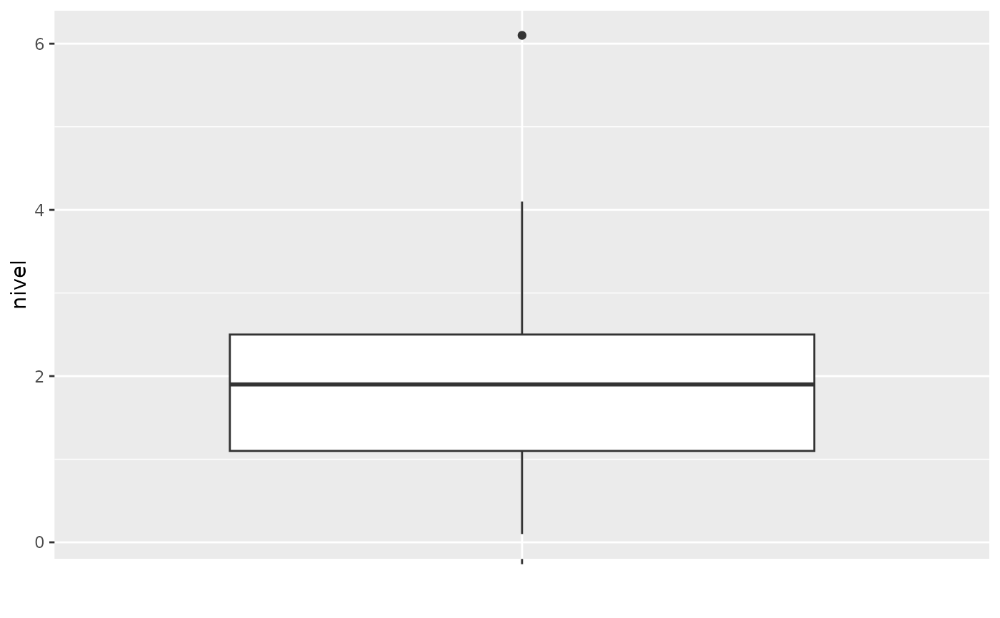
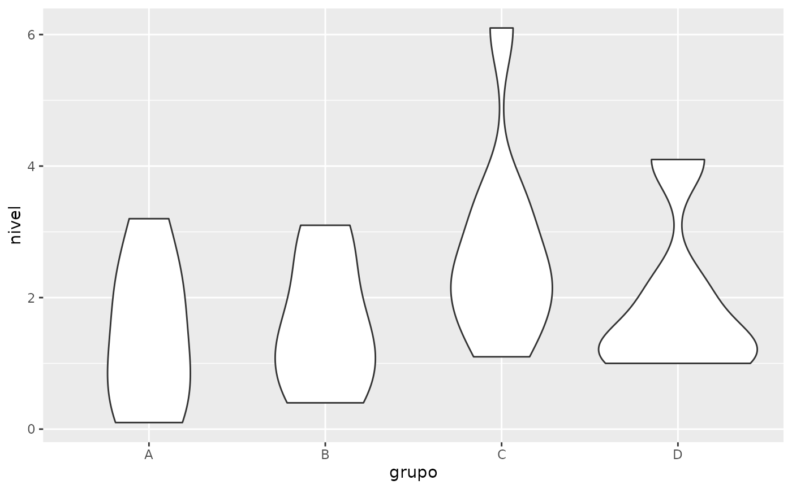
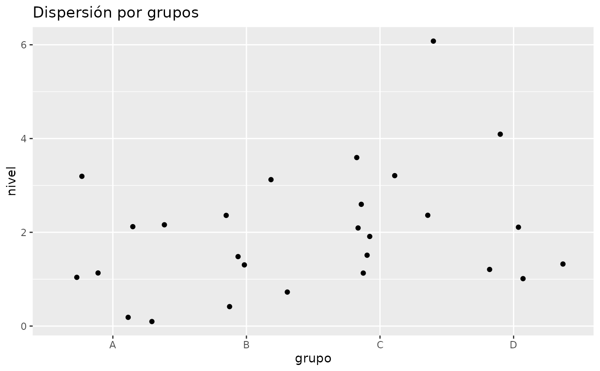
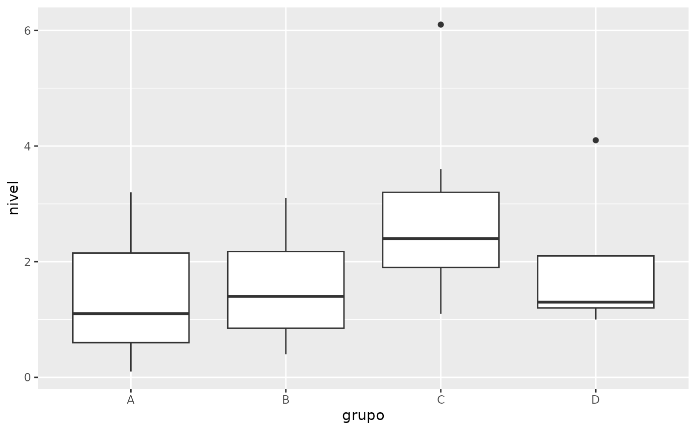
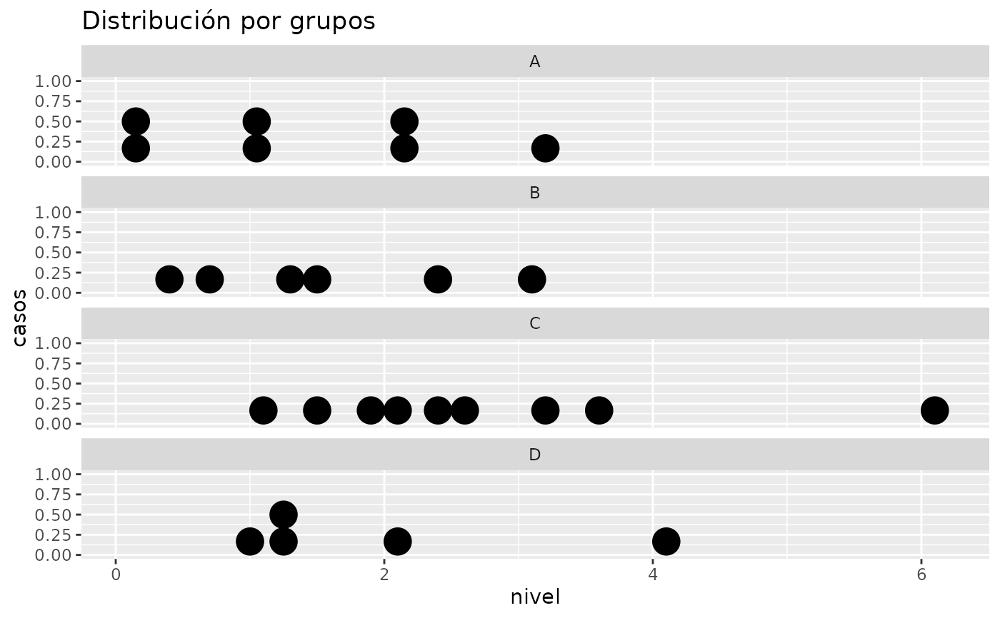
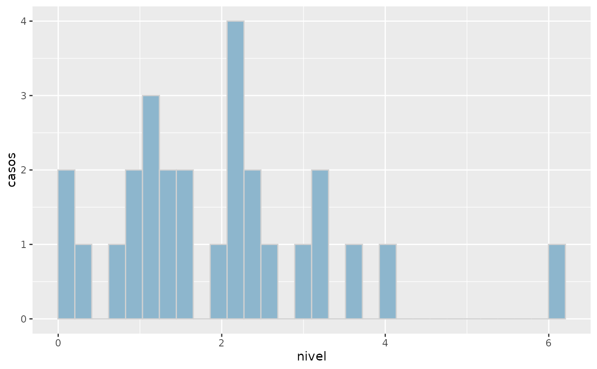

Tabla de medias y desviaciones por niveles de un factor
grps.RdObtencion de las medidas descriptivas, n, media, desviacion tipica para de una variable para cada nivel de un factor. (Texto intencionadamente sin tildes u otros caracteres especiales por la incompatibilidad de los mapas de caracteres) Se pueden indicar como parametro adicional (...) hnmin, que indica el n minimo requerido para hacer el histograma
Arguments
- x
vector: variable cuantitativa a resumir
- f
vector: factor cuyos niveles segmentan a la variable cuantitativa (si falta se da la descriptiva de x)
- ic
valor logico: si ic=TRUE, proporciona el intervalo de confianza para la media (sin correccion de tipo Bonferroni)
- grf
valor logico: indica si se requiere salida grafica o no
- alfa
valor real entre 0 y 1: nivel de error (alternativo a conf)
- conf
valor real entre 0 y 1: nivel de confianza para la elaboracion de intervalos (alternativo a alfa)
- decs
entero: precision decimal de la salida
- ...
parametros de configuracion de la funcion grpsggp
Value
Tabla con medidas descriptivas (n, media, y dt, y opcionalmente el IC) por niveles del factor f (si no hay factor se analiza la variable x)
Examples
nivel<-c(1.1,2.1,2.2,3.2,0.1,.2,1.0,0.4,0.7,1.3,1.5,3.1,2.4,3.6,1.1,2.4,
3.2,2.6,1.5,6.1,2.1,1.9,1,2.1,1.3,4.1,1.2)
grupo<-c("A","A","A","A","A","A","A","B","B","B","B","B","B","C","C","C",
"C","C","C","C","C","C","D","D","D","D","D")
grps(x=nivel)
#>
#> # Descriptiva de nivel
#> # --------------------
#> n media dt
#> Total 27 1.981 1.322


grps(x=nivel, f=grupo)
#>
#> # Descriptiva de nivel por grupo
#> # ------------------------------
#> grupo
#> n media dt
#> A 7 1.414 1.136
#> B 6 1.567 1.023
#> C 9 2.722 1.488
#> D 5 1.940 1.278
#> Total 27 1.981 1.322




grps(x=nivel, f=grupo, ic=TRUE)
#>
#>
#> # Descriptiva de nivel por grupo
#> # ------------------------------
#> grupo
#> n media dt ic_inf ic_sup
#> A 7 1.414 1.136 0.363 2.465
#> B 6 1.567 1.023 0.493 2.641
#> C 9 2.722 1.488 1.578 3.866
#> D 5 1.940 1.278 0.353 3.527
#> Total 27 1.981 1.322 1.458 2.504
#> ___________
#> * ICs para las medias μ[i] y μ global al 95% de confianza
#> (sin corrección por inferencia múltiple)
#>
#> Error in grpsggp(x = dataf$x, f = dataf$f, se = se, ggid = c(9, 7, 5, 2), lbls = names, ...): vectores de m() 4 y se() 16 de diferente dimensión
grps(x=nivel, hnmin=10)
#>
#> # Descriptiva de nivel
#> # --------------------
#> n media dt
#> Total 27 1.981 1.322
